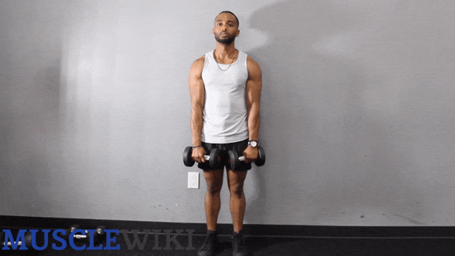

Forearms
Chin Ups
Difficulty : Intermediate


- Grab the bar shoulder width apart with a supinated grip (palms facing you)
- With your body hanging and arms fully extended, pull yourself up until your chin is past the bar.
- Slowly return to starting position. Repeat.
Dumbbells Wrist Curl
Difficulty : Beginner


- Grip the dumbbell with your palm facing upwards with your forearm rested against the bench.
- Slowly curl your wrist upwards in a semicircular motion.
- Return to starting position and repeat.
Dumbbells Wrist Extension
Difficulty : Beginner


- Grab two dumbbells with an overhand grip and lay your forearms across your knees.
- Let your wrists flex fully, then extend your wrists.
Dumbbells Reverse Curls
Difficulty : Intermediate


- Grab the dumbbells with a pronated (overhand) grip. You can do this exercise thumbless if it's more comfortable on your wrists.
- Flex at the elbows until your biceps touch your forearms. Try not to let your elbows flair outward.
Barbell Wrist Curl
Difficulty : Beginner


- Grab a straight bar with a supinated (underhand) grip.
- Kneel down next to a flat bench and place your forearms on the bench with your wrists just off the bench.
- Let the barbell pull down on your wrists until they are extended.
- Curl the barbell until your wrists are fully flexed.
- Lower in a controlled manner and repeat.
Reverse Barbell Curl
Difficulty : Advanced


- Take a double overhand grip that's about shoulder width. Flex your elbows while keeping your elbows tucked in. Try not to let them flare out.
- Curl until your forearm presses into your bicep. Then fully extend your elbows at the bottom of each rep.